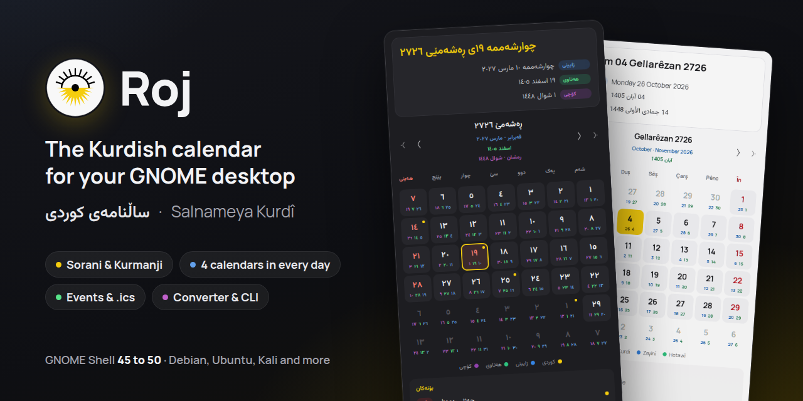

Your day, the Kurdish way.
Roj puts the Kurdish solar calendar in your GNOME top bar, with the Gregorian, Persian and Islamic dates beside it. In Sorani, Kurmanji, English, Persian or Arabic.
ڕۆژ · Roj · sun and day in Kurdish

Everything a Kurdish calendar needs
Made for people who live with the Kurdish calendar and with others too.
Five languages
Dates and interface in Sorani, Kurmanji, English, Persian or Arabic. The other calendars can follow your language or use their own: Gregorian in English, Persian in Persian, Islamic in Arabic.
Four calendars in every day
Each day card shows the Kurdish day large, with the Gregorian (on by default), Persian and Islamic days as small numbers: one, two or all three.
Events and holidays
43 Kurdish days are included, and you can add them to Google Calendar or an iPhone. Add your own events, or any .ics calendar, with one-click public holidays for Iraq, Iran, Turkey, Syria and Germany. The top bar shows when today has an event.
Written properly
Sorani ezafe (ی), on for the Kurdish date by default and switchable per calendar. Each language uses its own digits: ۰۱۲, ٠١٢ or 012. Traditional month names.
A font for each script
Manrope for left-to-right text; Vazirmatn, Estedad or Sahel for Arabic-script text. Or any installed font, or a font file.
Your own patterns
Every strftime token of tsroj and pyroj, with presets and live previews for the top bar, popup header and Copy button.
Converter, guide, CLI
Convert dates between the four calendars, read how conversion works, or run roj in a terminal for the same answers.
Light, dark, backup
Follows your system theme or the one you choose. Export every setting and import it on a fresh install.
See it
Every screenshot comes from a real GNOME Shell 50 session.


Install
The extension needs GNOME Shell 45 to 50: Ubuntu 24.04 and newer, Debian 13, Fedora 39 and newer, Kali with GNOME, and most current distributions. The roj command runs anywhere with GJS or Node.js.
extensions.gnome.org
Search for Roj in the Extension Manager app, or on extensions.gnome.org, and switch it on. Updates arrive by themselves.
Ubuntu PPA
For Ubuntu 24.04, 25.10 and 26.04. apt keeps it up to date.
sudo add-apt-repository ppa:0xdolan/roj
sudo apt install gnome-shell-extension-roj rojDebian, Ubuntu, Kali (.deb)
Download both packages from the latest release:
sudo apt install ./gnome-shell-extension-roj_*_all.deb ./roj_*_all.debAny distribution (tarball)
tar xzf roj-*.tar.gz && cd roj-*
make install # for your user
sudo make install-system PREFIX=/usr # or for everyoneOn Wayland, log out and back in once after installing so GNOME Shell loads Roj.
In the terminal too
roj uses the same engine and your extension settings. Every install method above includes it.